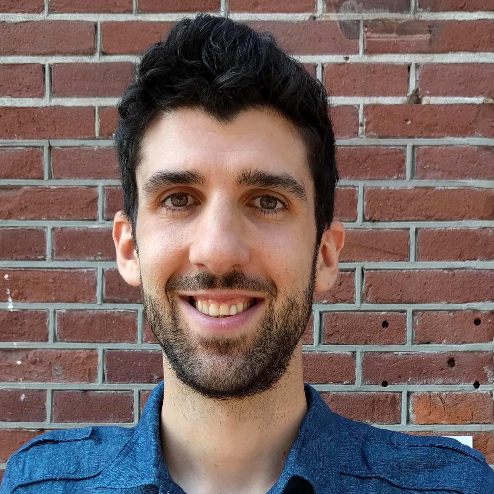

Chercheur Marie Curie
L’École de gouvernance
Université Utrecht
Courriel : a.v.kevins@uu.nl
Ma recherche se concentre sur l’interaction entre l’opinion publique et les réformes politiques, en particulier sur les politiques sociales et les groupes marginalisés. Certaines des questions que j’ai tenté d’investiguer jusqu'à maintenant sont : quels facteurs influencent les rapports entre les inclus et les exclus ? Comment peut-on mieux comprendre les préférences de l’opinion publique par rapport aux politiques sociales ? Et quels éléments incitent les réformes des programmes sociaux ?
Actuellement, je suis chercheur Marie Curie (« Marie Curie Research Fellow ») à l’École de gouvernance de l'université d’Utrecht. Mon projet étudie les préférences de l'opinion publique pour la représentation inégale, cherchant à découvrir quand et pourquoi les citoyens croient que certains groupes sociaux méritent d’avoir une influence étendue ou réduite sur le processus politique.
Avant d'occuper mon poste actuel à Utrecht, j'étais professeur adjoint (CDD de trois ans) au Département de science politique à l’université d'Aarhus, où j'étais affilié au projet UNIWEL (« Universalism and the Welfare State »). À ce titre, ma recherche portait sur l’engagement de la classe moyenne aux principes d'universalisme et de redistribution, via l'administration d'un projet de sondage original dans dix démocraties avancées.
J’ai obtenu mon doctorat au Département de science politique à l’Université McGill, où j’ai travaillé avec Stuart Soroka. À McGill, j’ai exploré le dilemme auquel sont confrontés les partis et syndicats de gauche face aux lacunes des couvertures sociales et à l’austérité, plus particulièrement lorsqu’ils doivent choisir entre deux options problématiques : étendre la couverture sociale à un plus grand nombre en réduisant les « bonnes » allocations prévues pour les inclus, ou maintenir la protection, la couverture et les allocations des inclus aux dépens des exclus.
Vous trouverez davantage de détails sur mes projets actuels et passés ici ou en consultant mon CV.